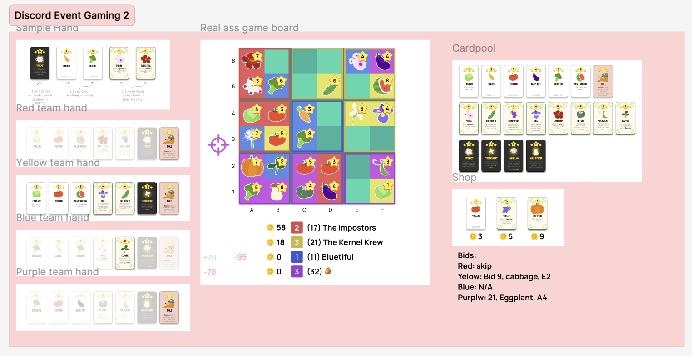
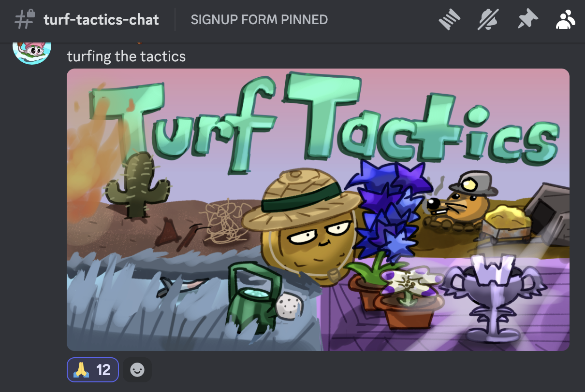
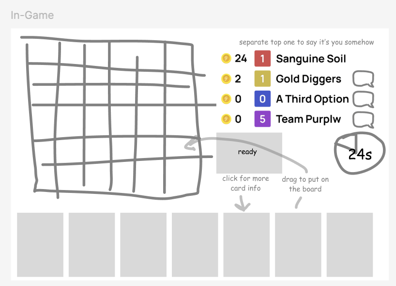
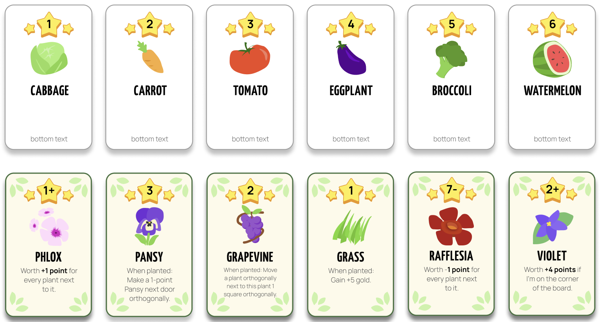
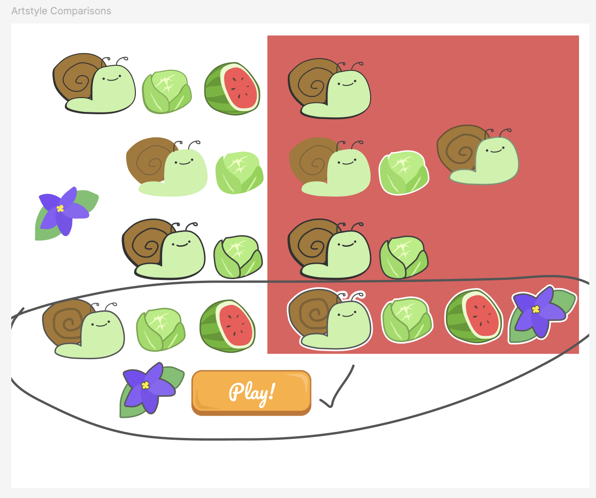
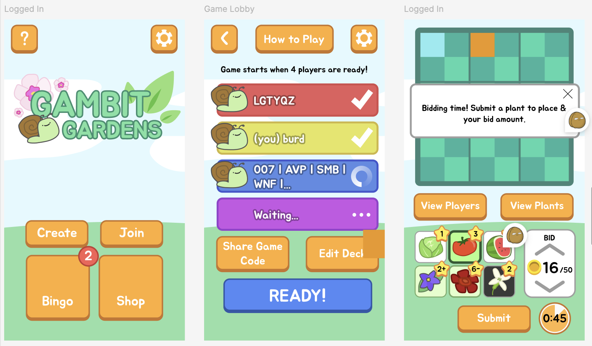
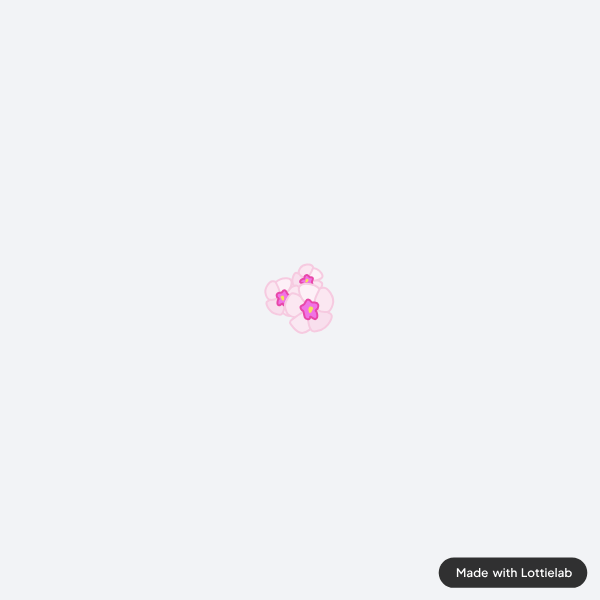
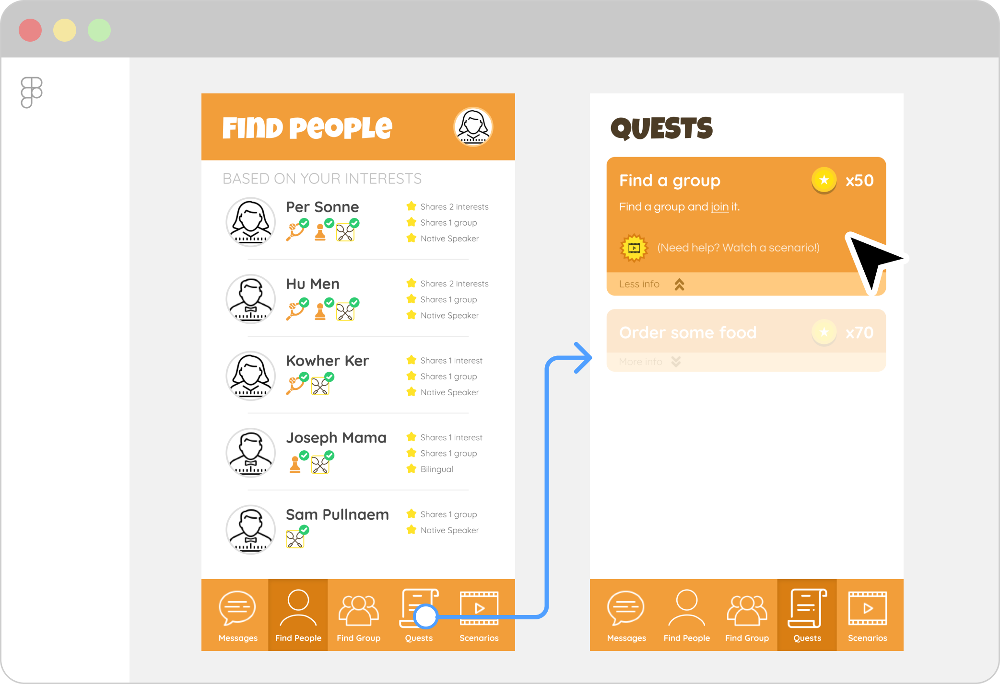

The event setup, which I manually ran (in Figma)

Fanart I received
I didn't play Monopoly until the ripe old age of 19. The game is fun with friends (even if the game does take forever), but I was introduced to rules where players auctioned for property, which was easily the most fun part of the game.
This inspired me to create a strategy game based around auctioning called Turf Tactics (later renamed Gambit Gardens), which I held asynchronously for around 50 members on a discord server. The participants loved it so much they wanted me to make it real! So I set out to.
The Process
I envisioned this sort of game as a cutesy, casual party board game, something to play with friends on the go. As such, this was my first attempt at making something mobile-first (and on top of that, portrait orientation as it's generally most comfortable for users), which came with its own issues.
The 6x6 board had to include a lot of key information, such as what plants were on the board, how many points they were worth, and so on.
Furthermore users would have to be able to see what abilities ALL the plants in their hand and on the board had, which there's not a lot of room left for after the board is on the screen.

Rough drafts, trying to figure out the layout.

Previous card designs, much too large to see all at once on a small screen!

Messing with the artstyle.
The Results
A demo video of one of the first betas.

The new, simplified design.

Plant animations!
Plant cards have three pieces of key info: Their icon, how many points they are, and what ability they have. I compressed their icon & points into a small, simplified box, and had them show their ability as a banner notification-like display when tapped.
Alongside a myriad of other changes and changing the artstyle to have a more soft-border-like style, I was able to create a working demo for Gambit Gardens and have it tested by several dozen people via Discord.
This also ended up being my first foray into both a LOT of vector art & animation.
Closing Thoughts
I think this game, while playable and fun, can be improved on a lot.
One UX problem left to solve is that players don't have a good idea of whose turn is next and whose turn it is, for example.
Beyond that, there are minor changes that would make the experience a whole lot better. Some animations (especially for Winter Melon, King Oyster Mushroom, and the Roses) are a little lazy and could use tweaking, and the small size of the animations prevents some finer details from showing up, which I need to adjust for. Another massive UX improvement is to actually animate out the plant abilities and their results to more clearly communicate what goes on during a turn.
These are some things I hope to work on before full release.
Lithops plants in action.

Lin-GO!
is an app that helps English Language learners learn slang.
ROLES: Researching User Groups, Sketching, Storyboarding, Paper & Hi-Fidelity Prototyping.